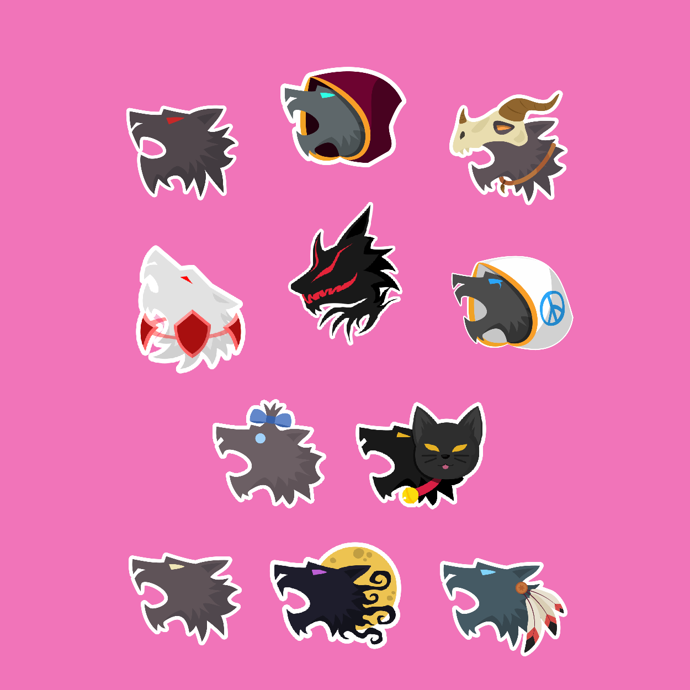
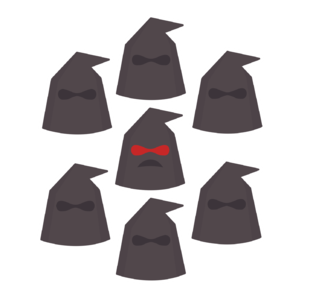
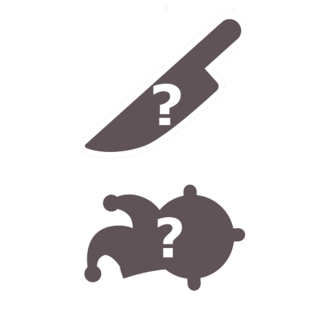
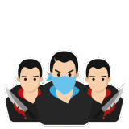

Introduction
About the game
Defend your village from the forces of evil or become a werewolf and hunt your friends! Join the mystery game , fight for your team and find the liars among your ranks. Werewolf Online is a multiplayer game for up to 16 players . Each game has different teams such as villagers or werewolves all fighting to be the last team standing. Use special abilities to uncover the roles of other players and convince your fellow players to work with you.
Features:
- Play online with your friends
- Join games with players from all around the globe
- Create and customize your own avatar
- Send roses to your beloved ones
- Join ranked games for serious competition
- Unlock unique and limited items and shine in the game!
- Discover a thriving Discord community with special events, extra loot and more!
The ultimate game of lies and deception!
Teams
There are 5 teams available in the game such as villagers, werewolves, couple, sect, solo killers, bandits, and zombies!
- Villager
- Werewolf
- Couple
- Sect
- Solo
- Bandit
- Zombie
- The villager is the main team in Werewolf Online. While in a game, there are 10 players that has this team. There is a total of 29 roles in the villager team. The goal of this team is to defeat all the other teams by killing or lynching them. Given that this is the main team in the game expect that you will have a role under this team most of the time.

- The Werewolf team is the main evil team that is trying to kill the Village team. At night, the werewolf team can identify their teammates as the game will show a paw or the role symbol on the bottom left of the player's avatar that is only visible within the team. The wolves can talk in a separate chat during the night in which they discuss who to kill and exchange info. They also try to kill the solo roles by pretending to be part of the village team during the day. They can gather more information than the other teams as they can take actions during both day and night. While in a game, there are 4 players that has this team. They cannot be killed by Solos (except Cannibal and Serial killer roles). The goal of the Werewolves is to lynch and kill the other teams during day and night (only applicable to villagers that are also not protected during night). The werewolves can also win if the number of remaining wolves is the same as the number of remaining villagers (given that all solo players already died).
- The couple team is made up of the Cupid and the two other players the Cupid chose to be a couple for the rest of the game. If one of the couple is lynched or killed the paired couple would die as well as the game says Player lost their love of their life and committed suicide.
. The goal of the Couple team is to be the last players alive.

- The Sect team’s goal is to be the last remaining team. While in game, the sect leader will choose players one by one during night to become the Sect Leader’s allies. This player must be from the village and couple teams only. Converted players keep their role's ability, however, they are now Sect Members and loyal to the Sect. If the Sect Leader dies, all players in the Sect die. Only the Sect Leader can convert during the night.

- While in a game, there are only one player for the Solo Killer team. Solo Killers cannot be killed by werewolves at night (except Zombies). The goal of the Solo Killer is to be the only player left alive by killing or converting (for zombies) at night and join the other teams in lynching other players during the day.

- During the night, the bandit can find an accomplice by converting a village or a solo voting player at night. The bandit will kill either a werewolf or a solo killer if they try to convert them. If the accomplice is killed, the bandit can find another accomplice. If the bandit is killed, the accomplice can continue the game and kill other players. The goal of the bandits team is for the Bandit, Accomplice or both is the last one alive.

- Each night, the Zombie can 'bite' a player. If successfully 'bitten', a ‘bitten villager’ symbol will show for a day, before getting turned into a Zombie the next night. Any player that is not on the Werewolf team can be turned into a Zombie. This player will lose all abilities from their previous role and will be replaced by the zombie’s abilities. Players on the Zombie team can talk to each other during the night, and each Zombie can select one player to bite. Because of this, the Zombies can quickly win the game. The Zombies goal is to ‘bite’ all possible players and when there are no werewolves left alive.
Roles
- Villager
- Doctor
- Bodyguard
- Tough Guy
- Red Lady
There are currently 53 roles in the Online version of the game:
- The Villager is part of the village team. The villager has no abilities, and it can only vote and talk during the day. It is present in Ranked Mode. The Villager is also called Forkman . The game will show before starting:
You are a regular villager without any abilities. You belong to the village team.
- Each night the Doctor can select one player to heal. If this player is attacked by the Werewolves, they don't die in that night. The Doctor can heal every night that they are alive. The Doctor cannot heal themselves.
- Each night the Bodyguard can select one player to protect. They also automatically protect themselves. If the Bodyguard or the player they are protecting gets attacked, they will survive. However, if they are attacked again the bodyguard will die.
- Each night, the Tough Guy can select one player to protect. If that player or the Tough Guy gets attacked, the tough guy sees the role of the weakest werewolf and will live until the next night before dying. This enables them to provide any information they found about the werewolves. It is likely they will be dead by the time the village has won.
- At night the Red Lady can visit another player. If the Red Lady gets attacked when visiting another player, she won´t die. However, if the Red Lady visits a Werewolf or Solo Killer, she will die. If the Red Lady visits a player that is killed, both die. This role is the same as the Villager during the day.
Happy hunting!